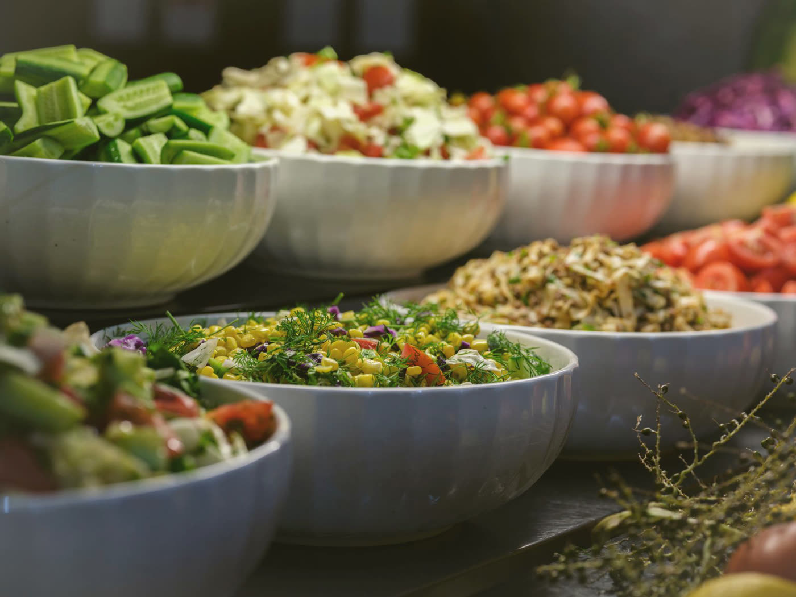

Gratis testBekijk plan
Gratis testBekijk plan
Gewoon afvallen
WegMetDieKilos
€ 3,62 per week
Voor wie: Je wilt afvallen zonder iets te schrappen, met een coach
Doe de gratis quiz ↗ Wat je krijgt en waar je op letJe eet gewoon alles, maar let op wat en hoeveel. Veel groente en fruit, volkoren en minder snaaien. Rustig aan, ongeveer een halve kilo per week.
Probeer gratis ↓
Volgens het Voedingscentrum geeft 5 tot 10 procent afvallen al gezondheidswinst.

Vul je gewicht en lengte in. Je ziet wat een gezond gewicht is bij jouw lengte, en wat een haalbaar eerste doel is.
Op basis van het Voedingscentrum. BMI is een richtlijn: spieren en lichaamsbouw tellen ook mee. Ben je 70 of ouder, dan rekenen we met een gezonde BMI van 22 tot 28. Niet bedoeld voor jongeren onder de 18 of tijdens een zwangerschap.
Deze plannen beginnen met een gratis test of quiz. Je ziet eerst wat je krijgt en beslist daarna pas.
Je kiest bij de aanbieder. Via onze links krijgen wij een kleine vergoeding (#ad), jij betaalt niets extra.
Gratis testBekijk plan
Voor wie: Je wilt afvallen zonder iets te schrappen, met een coach
Doe de gratis quiz ↗ Wat je krijgt en waar je op let
Een plan voor 7 dagen, een boodschappenlijst om af te vinken en 3 makkelijke recepten.
Open de startgids → Keto
Keto  Recepten
Recepten  Bewegen
Bewegen